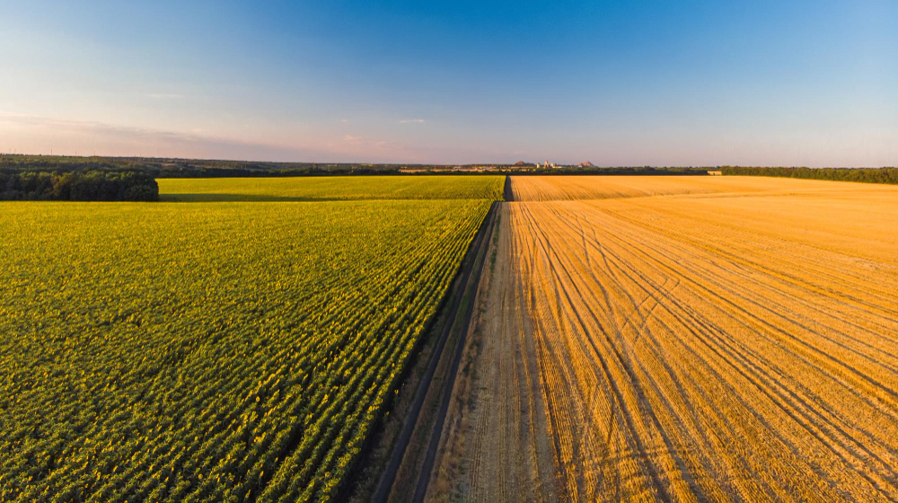
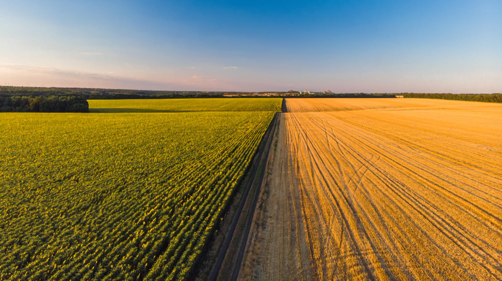

Do Campo a Cidade
Colhendo Oportunidades
O tempo é escasso, então não o desperdice esperando
as oportunidades aparecerem, vá atrás delas
As plantações vistas nas serras,
o gado correndo, o ar fresco e
o ambiente tranquilo trazem
uma paz enorme para as
famílias que vivem no campo,
proporcionando uma conexão
profunda com a natureza
Pessoas dirigindo-se aos seus
trabalhos, estudantes às escolas,
veículos em movimento, comércios
movimentados por toda parte, e
parques urbanos proporcionando
um refúgio de tranquilidade em
meio à agitação urbana
Campo
Caracterizada pela sua tranquilidade, a zona rural possui paisagens naturais
e muitas terras cultiváveis, com espaços amplos para atividades ao ar livre
e oferece alimentos e recursos naturais, proporcionando uma qualidade
de vida mais conectada com a natureza em comparação com a vida urbana
Alimentos
Alguns alimentos e recursos naturais obtidos na zona rural
Frutas
- Banana
 Maça
Maça Laranja
Laranja Melancia
Melancia
Carnes
 Bovina
Bovina- Frango
- Suina
 Cordeiro
Cordeiro
Láticinios
- Leite
 Queijo
Queijo- Iogurte
- Manteiga
Agricultura
Não poderíamos falar do campo e deixar a agricultura de fora,
pois ela é uma das principais atividades dos agricultores.
Através dela, muitos cereais amplamente cultivados são
produzidos, como milho, trigo, arroz e cevada
 

Cidade
Com uma alta densidade populacional
e infraestrutura desenvolvida, a zona urbana
é um centro de atividades culturais,
econômicas, sociais e educacionais.
Possui hospitais, comércios, escolas,
poluição e desigualdades socioeconômicas

Industrias
Na maioria das cidades, existem indústrias que fornecem
emprego para muitos habitantes dentro da cidade e
também nas cidades vizinhas
As indústrias desempenham um papel
crucial na economia, produzindo bens
essenciais e impulsionando a inovação.
Elas geram empregos, aumentam a
produtividade e promovem o
desenvolvimento tecnológico
Indústrias são setores fundamentais
da economia, responsáveis pela
produção de bens e serviços. Elas
podem ser classificadas em várias
categorias
Tecnologia
Mercados, comércios e empresas já utilizam a tecnologia para
controlar seus negócios; assim, isso proporciona mais rapidez
e controle sobre seus produtos
Oportunidades
Campo
- Agricultura e Pecuaria
- Agroturismo
- Produção de Energias
Renováveis - Artesanato e Produtos
Locais
Cidade
- Empregos Diversificados
- Educação e Qualificação
- Tecnologia e Inovação
- Saúde e Bem-Estar